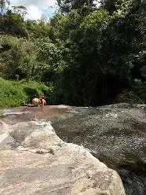
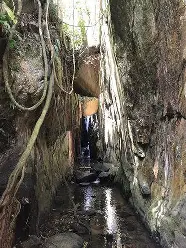
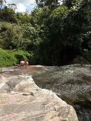
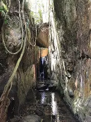
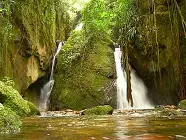
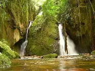

Sobre o lugar
A Cachoeira Indiana Jones é um dos destinos mais impressionantes e
selvagens da região serrana de Nova
Friburgo, conhecida por suas quedas d’água altas, fortes e por um
cenário que transmite verdadeira sensação
de
aventura. O nome curioso faz jus ao local: o ambiente é rústico,
imponente e cercado por mata fechada,
criando
uma atmosfera que lembra expedições em lugares pouco
explorados.
O acesso até a cachoeira envolve uma trilha que exige atenção,
passando por trechos de floresta densa,
terreno
irregular e áreas úmidas. Durante o percurso, é possível observar a
vegetação típica da Mata Atlântica, com
árvores altas, cipós, pedras cobertas por musgo e o som constante da
água ao fundo, que aumenta à medida que
se
aproxima da queda principal.
Ao chegar ao destino, o visitante se depara com uma cachoeira de
grande porte, onde a água despenca com
força
sobre um poço profundo e escuro. A potência da queda impressiona e
reforça a necessidade de respeito às
condições naturais do local. Em períodos de chuva, o volume de água
aumenta significativamente, tornando o
ambiente ainda mais impactante, porém mais perigoso.
Apesar da beleza exuberante, a Cachoeira Indiana Jones não é indicada
para iniciantes sem acompanhamento. O
banho deve ser feito com cautela e apenas em áreas mais seguras, longe
da queda principal. O local é ideal
para
quem busca contato intenso com a natureza, trilhas mais aventureiras e
paisagens dramáticas, sendo muito
procurado por aventureiros, fotógrafos e amantes de
ecoturismo.
A visita proporciona uma experiência marcante, que vai além do lazer:
é um convite à contemplação da força
da
natureza e à vivência de um ambiente preservado, onde cada passo exige
atenção e respeito. A Cachoeira
Indiana
Jones é um destino perfeito para quem procura emoção, desafio e uma
conexão profunda com a natureza em seu
estado mais bruto.
Informações rápidas
Galeria
 



 

💡 Dicas importantes
• Não vá sozinho: A trilha possui trechos escorregadios e isolados.
Vá acompanhado ou com alguém que
conheça o caminho.
•Evite totalmente após chuvas: O volume da cachoeira aumenta muito,
tornando o acesso e o poço extremamente
perigosos.
• Respeite os limites do local: Não se aproxime da queda principal e
evite saltos — o poço é profundo e a
correnteza é forte.